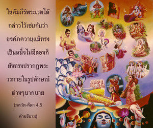

บุคลิกภาพแห่งพระเจ้าตรัสว่า หลายต่อหลายชาติทั้งเธอและข้าได้ผ่านมา ข้าสามารถระลึกได้ทุกๆชาติ แต่เธอจำไม่ได้ โอ้ ผู้กำราบศัตรู


ใน พฺรหฺม-สํหิตา (5.33) เรามีข้อมูลเกี่ยวกับอวตารต่างๆขององค์ภควานฺมากมาย ได้กล่าวไว้ดังนี้
อไทฺวตมฺ อจฺยุตมฺ อนาทิมฺ อนนฺต-รูปมฺ
อาทฺยํ ปุราณ-ปุรุษํ นว-เยาวนํ จ
เวเทษุ ทุรฺลภมฺ อทุรฺลภมฺ อาตฺม-ภกฺเตา
โควินฺทมฺ อาทิ-ปุรุษํ ตมฺ อหํ ภชามิ
“ข้าขอบูชาบุคลิกภาพสูงสุดแห่งพระเจ้า โควินฺท ( กฺฤษฺณ ) ผู้ทรงเป็นบุคคลแรกที่มีความสมบูรณ์บริบูรณ์ ไม่มีข้อผิดพลาด ไม่มีจุดเริ่มต้น แม้ว่าทรงอวตารมาในรูปลักษณ์ไม่มีที่สิ้นสุด พระองค์ยังทรงเป็น ภควานฺ องค์แรกเหมือนเดิม อาวุโสที่สุด และทรงปรากฏอยู่ในรูปของชายหนุ่มผู้สดใสอยู่เสมอ รูปลักษณ์ที่เป็นอมตะ เปี่ยมไปด้วยความสุขเกษมสำราญและสัพพัญญูของพระองค์นี้ โดยทั่วไปแม้นักวิชาการพระเวทที่ดีที่สุดยังไม่เข้าใจ แต่รูปลักษณ์เหล่านี้จะปรากฏอยู่เสมอกับสาวกบริสุทธิ์ผู้ไร้มลทินเจือปน”
ได้กล่าวไว้ใน พฺรหฺม-สํหิตา (5.39) อีกเช่นกันว่า
รามาทิ-มูรฺติษุ กลา-นิยเมน ติษฺฐนฺ
นานาวตารมฺ อกโรทฺ ภุวเนษุ กินฺตุ
กฺฤษฺณห์ สฺวยํ สมภวตฺ ปรมห์ ปุมานฺ โย
โควินฺทมฺ อาทิ-ปุรุษํ ตมฺ อหํ ภชามิ
“ข้าขอบูชาบุคลิกภาพสูงสุดแห่งพระเจ้า โควินฺท ( กฺฤษฺณ ) ผู้สถิตในอวตารต่างๆเสมอ เช่น ราม นฺฤสึห และในอนุอวตารอีกมากมายเช่นกัน แต่ทรงเป็นภควานฺองค์เดิมผู้ทรงพระนามว่า กฺฤษฺณ และทรงอวตารด้วยพระองค์เองเช่นกัน”
ในคัมภีร์พระเวทได้กล่าวไว้เช่นกันว่าองค์ภควานฺแม้ทรงเป็นหนึ่งไม่มีสองก็ยังทรงปรากฏพระวรกายในรูปลักษณ์ต่างๆมากมาย เหมือนกับมณี ไวทูรฺย ซึ่งเปลี่ยนสีแต่ยังคงเป็นหนึ่ง รูปลักษณ์อันหลากหลายทั้งหมดขององค์ภควานฺนั้นสาวกบริสุทธิ์ผู้ไร้มลทินจึงจะเข้าใจ มิใช่เพียงแต่ศึกษาคัมภีร์พระเวท ( เวเทษุ ทุรฺลภมฺ อทุรฺลภมฺ อาตฺม-ภกฺเตา ) สาวกเช่น อรฺชุน ทรงเป็นสหายสนิทขององค์ภควานฺเสมอ เมื่อใดที่องค์ภควานฺทรงอวตารเหล่าสาวกจะอวตารมาร่วมด้วยเช่นเดียวกันเพื่อรับใช้พระองค์ในขีดความสามารถของตนที่แตกต่างกันไป อรฺชุน ทรงเป็นหนึ่งในจำนวนสาวกเหล่านี้ ในโศลกนี้เราเข้าใจได้ว่าหลายล้านปีมาแล้วเมื่อองค์ศฺรี กฺฤษฺณตรัส ภควัท-คีตา แก่สุริยเทพ วิวสฺวานฺ และ อรฺชุน ในขีดความสามารถที่แตกต่างกันก็ทรงปรากฏเช่นเดียวกัน ข้อแตกต่างระหว่างองค์ภควานฺและ อรฺชุน คือองค์ภควานฺทรงจำเหตุการณ์ได้ในขณะที่ อรฺชุน ทรงจำไม่ได้ นี่คือข้อแตกต่างระหว่างสิ่งมีชีวิตผู้เป็นละอองอณูและองค์ภควานฺ แม้ อรฺชุน จะทรงได้รับการยกย่อง ณ ที่นี้ว่าเป็นวีรบุรุษผู้ยิ่งใหญ่สามารถกำราบศัตรูแต่ไม่สามารถเรียกความจำกับสิ่งที่เกิดขึ้นในชาติก่อนให้กลับคืนมาได้ ฉะนั้นสิ่งมีชีวิตไม่ว่าจะยิ่งใหญ่แค่ไหนในการประเมินค่าทางวัตถุจะไม่มีวันเทียบเท่าองค์ภควานฺได้ ผู้ใดเป็นสหายสนิทขององค์ภควานฺแน่นอนว่าเป็นบุคคลผู้หลุดพ้นแล้วแต่ถึงอย่างไรก็ไม่สามารถเทียบเท่ากับองค์ภควานฺได้ พฺรหฺม-สํหิตา ได้อธิบายถึงองค์ภควานฺว่าทรงเป็นผู้ที่ไม่มีความผิดพลาด ( อจฺยุต ) หมายความว่าทรงไม่เคยลืมพระองค์เองแม้จะมาสัมผัสกับวัตถุ ดังนั้นองค์ภควานฺ และสิ่งมีชีวิตจะไม่มีวันเทียบเท่ากันได้ไม่ว่าในกรณีใด แม้กระทั่งสิ่งมีชีวิตที่หลุดพ้นแล้วเหมือนกับ อรฺชุน แม้ อรฺชุน ทรงเป็นสาวกขององค์ภควานฺบางครั้งทรงลืมธรรมชาติขององค์ภควานฺ แต่ด้วยพระกรุณาธิคุณของพระองค์สาวกสามารถเข้าใจสภาวะที่ไม่มีข้อผิดพลาดขององค์ภควานฺได้ทันที ในขณะที่ผู้ไม่ใช่สาวกหรือมารจะไม่สามารถเข้าใจธรรมชาติทิพย์นี้ ฉะนั้นคำอธิบายใน คีตา เหล่านี้สมองมารไม่สามารถเข้าใจได้ องค์ศฺรีกฺฤษฺณทรงจำสิ่งที่กระทำเมื่อล้านๆปีก่อนหน้านี้แต่ อรฺชุน ทรงไม่สามารถจำได้ ถึงแม้ว่าทั้งองค์กฺฤษฺณและ อรฺชุน ทรงเป็นอมตะโดยธรรมชาติ เราอาจพิจารณา ณ ที่นี้ว่าสิ่งมีชีวิตลืมทุกสิ่งทุกอย่างเนื่องมาจากการเปลี่ยนร่างกาย แต่องค์ภควานฺทรงจำได้เพราะทรงมิได้เปลี่ยนร่าง สจฺ-จิทฺ-อานนฺท ของพรองค์ อไทฺวต หมายความว่าไม่มีข้อแตกต่างระหว่างพระวรกายและวิญญาณของพระองค์ ทุกสิ่งทุกอย่างที่สัมพันธ์กับพระองค์เป็นทิพย์ ในขณะที่พันธวิญญาณแตกต่างจากร่างวัตถุของตน และเนื่องจากร่างขององค์ภควานฺและดวงวิญญาณเหมือนกันสภาวะขององค์ภควานฺจึงทรงแตกต่างจากสิ่งมีชีวิตโดยทั่วไปเสมอ แม้ในขณะที่พระองค์เสด็จมาในระดับวัตถุพวกมารไม่สามารถปรับตนเองให้เข้ากับธรรมชาติทิพย์ขององค์ภควานฺได้ ซึ่งพระองค์จะทรงอธิบายในโศลกต่อไป